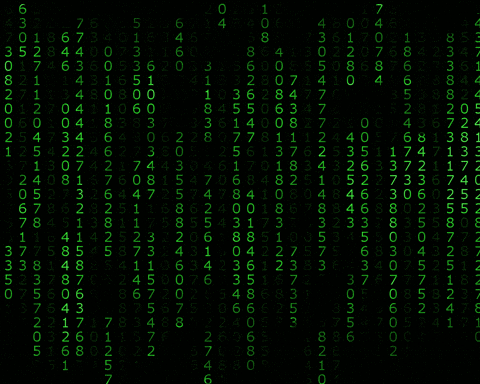

A GLOBAL MEASURE OF SCIENTIFIC EQUALITY
Achieving gender parity is essential for scientific innovation and equitable career opportunities. Existing studies have often examined these components separately or within limited geographic or disciplinary settings.
This study provides the first comprehensive assessment of both current and future global trends in gender parity in academia across more than 180 countries using 47 million publication records from 1996 to 2023.
Read the Work
Publication
Global improvements in the representation of women in science are stalling
Vishnoi1, Kim1, Carassco1 et al.
Nature Comms - in Review, 2026